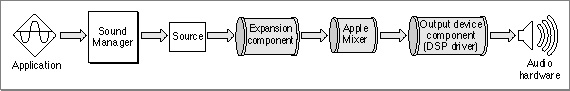

Sound Component Chains
Prior to version 3.0, the Sound Manager performed all audio data processing internally, using its own filters to decompress audio data, convert sample rates, mix separate sound channels, and so forth. This effectively rendered it difficult, if not impossible, to add other data modification filters to process the audio data. (The now-obsolete method of installing a sound modifier with theSndAddModifierroutine did not work reliably.) More importantly, the Sound Manager was responsible for managing the entire stream of audio data, from the application to the available sound-producing audio hardware. This made it very difficult to support new sound output devices.In versions 3.0 and later, the Sound Manager provides a new audio data processing architecture based on components, illustrated in Figure 5-1. The fundamental idea is that the process of playing a sound can be divided into a number of specific steps, each of which has well-defined inputs and outputs. Figure 5-1 shows the steps involved in playing an 11 kHz compressed sampled sound resource on a Macintosh II computer.
An application sends the compressed sound data to the Sound Manager, which constructs an appropriate sound component chain that links the unprocessed audio data to the sound components required to modify the data into a form that can be sent to the current sound output device. As you can see in Figure 5-1, the Sound Manager links together sound components that, in sequence, expand the compressed sound data into audio samples, convert the sample rate from 11 kHz to 22 kHz, mix those samples with samples from any other sound channels that might be playing, and then write the samples to the available audio hardware (in this case, the FIFO buffer in the Apple Sound Chip).
Figure 5-1 The component-based sound architecture
- IMPORTANT
- The Sound Manager itself converts both wave-table data and square-wave data into sampled-sound data before sending the data into a chain of sound components. As a result, sound components need to be concerned only with sampled-sound data.
The components in a component chain may vary, depending both on the format of the audio data sent to the Sound Manager by an application and on the capabilities of the current sound output device. The chain shown in Figure 5-1 is necessary to handle the compressed 11 kHz sound because the Apple Sound Chip can handle only 22 kHz noncompressed sampled-sound data. Other sound output devices may be able to do more processing internally, thereby reducing the amount of processing required by the sound component chain. For instance, a DSP-based sound card might be capable of converting sample rates itself. In that case, the Sound Manager would not install the rate conversion component into the sound component chain. The resulting sound component chain is shown in Figure 5-2.
Figure 5-2 A component chain for audio hardware that can convert sample rates

The principal function of a sound component is to transfer data from the source down the chain of sound components while performing some specific modification on the data. It does this by getting a block of data from its source component (the component that immediately precedes it in the chain). The sound component then processes that data and stores it in the component's own private buffers. The next component can then get that processed data, perform its own modifications, and pass the data to the next component in the chain. Eventually, the audio data flows through the Apple Mixer (described in the next section) to the sound output device component, which sends the data to the current sound output device.
Notice that only the sound output device component communicates directly with the sound output hardware. This insulates all other sound components from having to know anything about the current sound output device. Rather, those components (sometimes called utility components) can simply operate on a stream of bytes.
The Sound Manager provides sound output device components for all sound output devices built into Macintosh computers. It also provides utility components for many typical kinds of audio data manipulation, including
Currently, you can write sound output device components to handle communication with your own sound output devices. You can also write utility components to handle custom compression and expansion schemes. You cannot currently write any other kind of utility component.
- sample rate conversion
- audio data expansion
- sample size conversion
- format conversion (for example, converting offset binary data to two's complement)